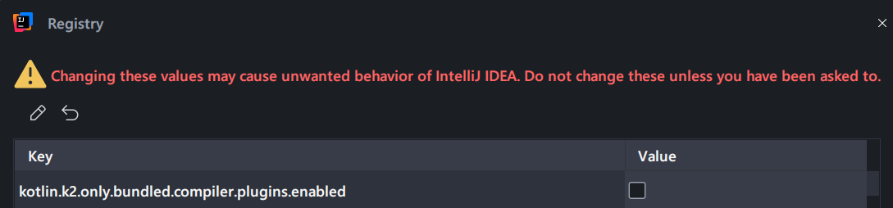

Kopy¶

Usage¶
IntelliJ IDEA or Android Studio configuration¶
Enable K2 compiler in the IDE settings:¶
File > Settings > Language & Frameworks > Kotlin > Enable K2 mode
It is necessary to restart the IDE to do the next step.

Allow third party K2 plugins:¶
Popup the quick search with shift + shift and type Registry..., then search for:
kotlin.k2.only.bundled.compiler.plugins.enabled
And uncheck it.

Disclaimer IDE issues¶
⚠️ Note:
If the code compiles and run in the terminal, but the IDE is failing with some error, try with a different IDE version.
It is recommendable to use the latest IDEA version, including EAP ones if possible.
Download¶
Apply the plugin in the build.gradle.kts or build.gradle:
plugins {
id("com.javiersc.kotlin.kopy") version "$kopyVersion"
}
As the plugin uses under the hood the Atomicfu library, the performance can be improved by applying the Atomicfu plugin.
plugins {
id("com.javiersc.kotlin.kopy") version "$kopyVersion"
id("org.jetbrains.kotlin.plugin.atomicfu") version "$kotlinVersion"
}
Plugin configurations¶
The extension kopy is available to configure the plugin:
Debug mode¶
The debug option allows to enable the debug mode. It will measure the time each phase takes to be
computed. It can help to benchmark any execution or find any issue. It can be false or true,
being the default value false.
With the reportPath option, it is possible to specify the path where the report will be saved. The
default value is build/reports/kopy.
[!CAUTION] It is not recommended to enable the debug mode by default, as it will increase the build time.
Example¶
plugins {
id("com.javiersc.kotlin.kopy") version "$version"
}
kopy {
debug = true
reportPath = layout.buildDirectory.dir("reports/custom/kopy")
}
Copy functions¶
The copyFunctions option accepts the list of functions that will be generated. The default value
is listOf(KopyCopyFunctions.Copy, KopyCopyFunctions.Invoke).
An empty list will generate all copy functions (copy, and invoke).
Example¶
plugins {
id("com.javiersc.kotlin.kopy") version "$version"
}
kopy {
copyFunctions = listOf(KopyFunctions.Copy)
}
Transform functions¶
The functions option accepts the list of functions that will be generated. The default value is
listOf(KopyTransformFunctions.Set, KopyTransformFunctions.Update, KopyTransformFunctions.UpdateEach).
An empty list will generate all transform functions, (set, update, and updateEach).
Example¶
plugins {
id("com.javiersc.kotlin.kopy") version "$version"
}
kopy {
transformFunctions = listOf(KopyTransformFunctions.Set, KopyTransformFunctions.Update)
}
Visibility¶
The visibility option allows changing the visibility of the copy and invoke functions. The
default value is Auto, which uses the same visibility the primary constructor has, as the original
copy function does after Kotlin 2.0.20.
Possible values:
KopyVisibility.Auto(Default): The visibility of the primary constructor is used.KopyVisibility.Public: The visibility of the generated functions will bepublic.KopyVisibility.Internal: The visibility of the generated functions will beinternal.KopyVisibility.Protected: The visibility of the generated functions will beprotected.KopyVisibility.Private: The visibility of the generated functions will beprivate.
It is possible to have a more restrictive Kopy copy and invoke functions than the original one,
for example by providing the KopyVisiblity.Private and the primary constructor being public or
internal. The original copy function would be public or internal respectively, and the Kopy
functions would be private.
Note
If the primary constructor visibility is more restrictive than the specified visibility, the primary constructor one is used.
Example¶
plugins {
id("com.javiersc.kotlin.kopy") version "$version"
}
kopy {
visibility = KopyVisibility.Private
}
Kopy Example¶
fun main() {
val house = House(
squareMeters = 100,
kitchen = Kitchen(
cat = Cat(
name = "Garfield",
age = 5,
numbers = listOf(1, 2, 3),
),
squareMeters = 10,
),
)
val house2: House = house.copy {
squareMeters = 200
kitchen.cat.name = "Felix"
kitchen.cat.age = 7
kitchen.cat.numbers.updateEach { it + 1 }
kitchen.squareMeters = 20
}
// House(squareMeters=200, kitchen=Kitchen(cat=Cat(name=Felix, age=7, numbers=[2, 3, 4]), squareMeters=20))
println(house2)
}
@Kopy
data class House(val squareMeters: Int, val kitchen: Kitchen)
@Kopy
data class Kitchen(val cat: Cat, val squareMeters: Int)
@Kopy
data class Cat(val name: String, val age: Int, val numbers: List<Int>)
Features¶
copy or invoke¶
copy and invoke create a new instance of the data class with the content specified. There is no
difference between both functions.
set or =¶
set and = do the same, assigning a value.
val house2: House = house.copy {
kitchen.cat.name = "Felix"
}
val house3: House = house.copy {
kitchen.cat.name.set("Felix")
}
update¶
update is a lambda which allows updating the value of the property while having access to the
current value.
val house2: House = house.copy {
kitchen.cat.name.update { name -> "$name Jr." }
}
updateEach¶
updateEach is a lambda that allows updating the values of an Iterable while having access to the
current value of each element.
val house2: House = house.copy {
kitchen.cat.numbers.updateEach { it + 1 }
}
Kotlin Multiplatform¶
Kopy is compatible with Kotlin Multiplatform projects if it is used exclusively on projects that applies the plugin.
Calling copy or invoke functions from Swift, or anything that is not Kotlin with the Kopy plugin
applied, will not work.
KopyKat comparison¶
Kopy uses the K2 compiler plugin whereas KopyKat uses KSP to generate code, as a consequence there are different advantages and disadvantages.
Advantages¶
- Kopy’s code generation is faster than KopyKat’s
- Kopy does not need to run any Gradle task to get feedback on the IDE:
- Autocompletion shows the
copyandinvokefunctions instantly after annotating a data class with@Kopyannotation. - Removing the
@Kopyannotation instantly removes thecopyandinvokefunctions without running a Gradle task or manually deleting thebuilddirectory of a project. - As it is not necessary to assemble/build the project, the feedback loop is faster.
- Autocompletion shows the
- Build time should be better too (not tested).
- Kopy only adds 5 or 6 functions/properties to each data class, whereas KopyKat needs to generate builders and the functions/properties match the number of properties in the data class. In the future, the number of properties Kopy adds to each data class will be reduced to 1 or 2.
Disadvantages¶
Similar to Kotlin Power Assert, this plugin works on
the call site, so it modifies the body of the copy or invoke lambdas. That means the plugin must
be applied to get it working, so it is not a good idea to use it in a library or an SDK as it will
force the users to apply the plugin. KopyKat generates all
the builders, so it does not have this limitation.
An error is shown in the IDE or at compilation time if the plugin is not applied and the copy or
invoke function from a class in another module is called, but it will not appear if the consumer
is a Java application/library.
How it works¶
The plugin transforms the lambda into what a developer would do manually with copy functions,
that means the copy or invoke lambda can only work if the plugin is applied to the project it is
being called.
If the plugin is not applied, the copy and invoke function calls will be marked as
errors. Don’t suppress them without applying the plugin as they will not work.
It is not necessary to suppress them manually, the Gradle plugin will suppress them automatically.
There is no reflection or mutability, the class will have some new functions and properties added.
The number is limited to 6 independently of the number of properties the data class has:
copyfunctioninvokefunction_atomicpropertysetfunctionupdatefunctionupdateEachfunction
When the Context Parameters feature is available, the number of properties and methods added to the data class will be reduced to only 1 or 2:
copyfunction [optional]invokefunction [optional]
A new CopyScope will be created, and it will be used to store the rest of properties, and it
will be added as a context parameter to the copy and invoke lambdas:
data class House(val squareMeters: Int, val kitchen: Kitchen) {
fun copy(block: CopyScope.() -> Unit): T {
// ...
}
operator fun invoke(block: CopyScope.() -> Unit): T {
// ...
}
}
License¶
Copyright 2025 Javier Segovia Córdoba
Licensed under the Apache License, Version 2.0 (the "License");
you may not use this file except in compliance with the License.
You may obtain a copy of the License at
https://www.apache.org/licenses/LICENSE-2.0
Unless required by applicable law or agreed to in writing, software
distributed under the License is distributed on an "AS IS" BASIS,
WITHOUT WARRANTIES OR CONDITIONS OF ANY KIND, either express or implied.
See the License for the specific language governing permissions and
limitations under the License.